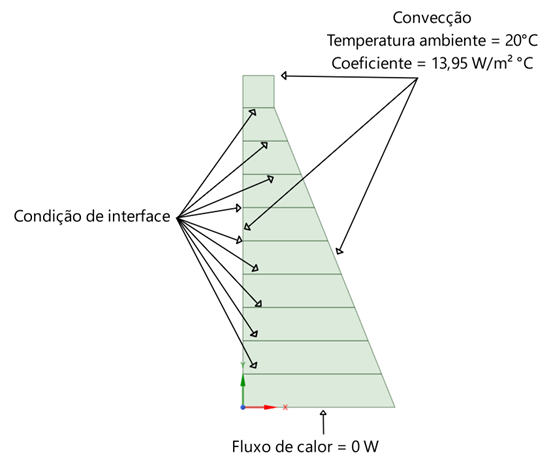

Resumo
Este trabalho apresenta uma metodologia para a análise numérica do comportamento térmico em estruturas de concreto massa, com foco em barragens de concreto, considerando variações térmicas que podem resultar em fissuras. Utilizando equações de condução de calor e contemplando a geração de calor interno durante a hidratação do cimento, o estudo aborda o comportamento térmico do concreto, estabelecendo limites para gradientes de temperatura. Apresentamos equações de condução de calor, cálculos para determinar a taxa de geração de calor interno, e a resolução numérica por meio do método dos elementos finitos (FEM). O objetivo é analisar a distribuição da temperatura em barragens, visando prevenir problemas de fissuração causados por variações térmicas.
Objetivos
- Usar uma geometria de uma estrutura de barragem de concreto e fazer sua representação computacional através do software de simulação ANSYS Mechanical.
- Realizar uma análise das soluções obtidas utilizando o Método dos Elementos Finitos (MEF) para resolver numericamente as equações de calor em duas dimensões.
- Implementar as condições de contorno e a geometria, baseando-se em situações reais.
- Comparar os resultados numéricos com os resultados analíticos e experimentais, quando possível.
Geometria
Realizou-se um estudo comparativo entre duas abordagens: construção em camada única e construção em camadas. No caso da barragem em camada única, optou-se por uma simplificação realista, e a geometria correspondente pode ser observada na figura abaixo:

No caso da barragem em camadas, o modelo é idêntico ao apresentado na figura acima, diferenciando-se apenas pela construção em camadas de 1 metro de altura, conforme ilustrado a seguir:

Condições de contorno
As condições de contorno que circundam o problema são as seguintes: para as áreas em que o concreto está em contato com o ar, foi adotado um coeficiente de convecção de 13,95 W/m°C e uma temperatura ambiente de 20°C. Na base da barragem, considerou-se que o fluxo de calor é nulo. Por último, temos a condição de geração de calor interno, que varia com o tempo de cura do concreto, e que pode ser vista a seguir, juntamente com as propriedades adotadas para o concreto.

No caso da barragem em camadas, é necessário adicionar uma condição de interface, a qual irá impedir a troca de calor entre as camadas caso elas ainda não tenham sido lançadas.
Resultados
O gradiente de temperatura ao longo de 28 dias para a concretagem em camada única pode ser observado a seguir:


Para o caso da concretagem em camadas, foi adotado um intervalo de 2 dias entre cada lançamento, e o resultado pode ser observado a seguir:


Observação
Durante este trabalho, pude aplicar meus conhecimentos de termodinâmica e análise de elementos finitos. Utilizei simulações transientes e diversas ferramentas para aplicação de condições de contorno, tais como temperatura, fluxo de calor, convecção e geração de calor interno e continuidade. Essa experiência prática agregou valor ao meu aprendizado e ao meu desenvolvimento profissional. O trabalho completo pode ser baixado ao final desta página.